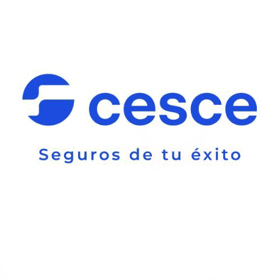
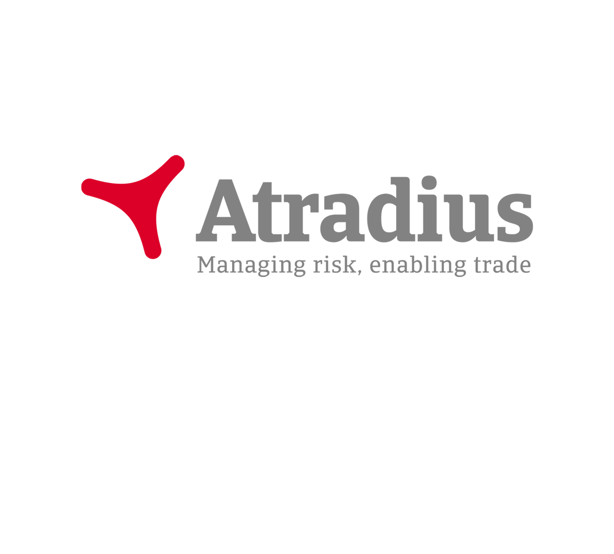

CSM2 Finance réunit une expérience de haut niveau dans la finance internationale, les transactions EPC-F, la coordination technique, la stratégie d’achats, les interfaces avec le secteur public et la mise en œuvre de projets.
CSM2 Finance est bâtie autour d’une équipe senior cumulant 45 ans d’expérience mondiale et d’un réseau de partenaires spécialisés, forts d’une longue expérience du financement de projet, des structures EPC-F, du développement d’infrastructures, de la coordination de l’ingénierie, des achats, de la mise en œuvre dans le secteur public, des marchés sensibles en matière de conformité et de la gestion des parties prenantes internationales.
Ce parcours combiné nous permet d’accompagner nos clients non seulement dans l’élaboration des schémas de financement, mais aussi dans la préparation des projets de manière à ce que prêteurs, ECA, DFI, entrepreneurs, fournisseurs et autorités publiques puissent les comprendre, les évaluer et agir.
Structures adossées aux ECA/DFI, coordination des prêteurs, évaluation des schémas de financement, modèles financiers, documentation de bancabilité et développement de transactions.
Revue du périmètre technique, évaluation de la maturité des études, logique du CAPEX, maturité du projet, identification des risques techniques et revue des hypothèses utilisées dans les discussions de financement.
Coordination des fournisseurs, stratégie d’achats, allotissement contractuel, alignement origine/contenu, appui à la documentation d’appel d’offres et gestion des interfaces entre maître d’ouvrage, entrepreneur, fournisseur et parties au financement.
Planification de la mise en œuvre, logique de calendrier, systèmes de reporting, registres des risques, coordination des parties prenantes et cadres de contrôle de projet pour des projets d’infrastructure et industriels complexes.
Coordination avec les autorités publiques, les maîtres d’ouvrage soutenus par les États, les parties prenantes institutionnelles, les prêteurs, les ECA, les DFI et les contreparties à vocation de développement.
Appui KYC, coordination de la due diligence d’intégrité, documentation ECA/DFI, revue des dossiers de décaissement, suivi de la conformité et appui administratif.
Travailler autour de la table du projet
Les projets complexes d’infrastructure et d’énergie sont façonnés par de nombreuses parties avant qu’un montage financier ne soit formellement approuvé. CSM2 Finance accompagne ses clients en alignant les attentes des maîtres d’ouvrage, entrepreneurs, fournisseurs, prêteurs, ECA, DFI, autorités publiques, assureurs et conseils autour d’une structure de projet cohérente et finançable.
C’est particulièrement important dans les transactions EPC-F et adossées aux ECA, où la bancabilité dépend non seulement du modèle financier, mais aussi de la structure contractuelle, du contenu exportable, de la stratégie d’achats, du plan de mise en œuvre, des exigences ESG, de l’allocation des risques et de la crédibilité du cadre de réalisation.
CSM2 Finance évolue au sein d’un vaste écosystème international du financement des infrastructures, qui réunit agences de crédit à l’exportation, institutions de financement du développement, banques multilatérales de développement, prêteurs commerciaux, assureurs, partenaires de risque, sponsors, opérateurs de services publics, contreparties souveraines et conseils spécialisés.
Pour les projets EPC-F et adossés aux ECA, un alignement précoce avec cet écosystème est souvent décisif. Il permet de tester l’appétit pays, l’éligibilité du contenu exportable, la maturité, les sûretés, la couverture des risques, les attentes ESG, les contraintes d’achats et la voie réaliste vers le bouclage financier.
Grâce à son équipe senior et à son réseau de partenaires, CSM2 Finance est en mesure d’échanger avec un large univers d’institutions actives dans le financement export, le financement de projet et le financement du développement. Cela nous permet de tester tôt l’appétit de financement, d’identifier des voies de financement réalistes et de positionner les projets avant que les processus formels d’achats ou de revue par les prêteurs ne soient figés.





* Les références aux institutions n’impliquent ni partenariat exclusif, ni mandat formel, ni représentation officielle, sauf mention expresse.
Univers sélectionné d’interfaces institutionnelles
Les institutions suivantes représentent une partie de l’univers plus large de transactions, de rencontres, de conseil et d’apporteurs de capitaux pertinent pour les activités EPC-F, de financement export, de financement de projet et de financement du développement.
Euler Hermes / Allianz TradeUKEFCESCESACEBPI FranceAtradiusSERVKUKEUS EXIMEDCFinnveraSaudi EXIM BankEksfinEIFOEKNKSUREKEXIMNEXIOeKBEGAPIndiaEximTurk Eximbank
EngieØrstedVestasNational GridXlinksSun Africa & UGT RenewablesVietnam ElectricitySiemensLinxonPIFOman Investment Authorityet certaines contreparties souveraines/du secteur public
SantanderSMBCCIBCCrédit Agricole CIBNatWestMUFGCitiHSBCINGSociété GénéraleStandard CharteredCommerzbankLBBWKfW IPEX-BankJP MorganBank of AmericaBarclaysBBVABNP ParibasDeutsche BankNatixisNordeaIntesa SanpaoloUniCredit
DLA PiperNorton Rose FulbrightWatson Farley & WilliamsPinsent MasonsAshurstA&O ShearmanLinklatersMilbankMIGAATIDIICIECBPLAonAXA XLSovereign Risk InsuranceVantage RiskTexelChatham FinancialEY
ADBIFCEBRDEIBDFCWorld Bank GroupMIGAAfDBPIDGFMONorfundSwedfundSidaNordic Investment BankBritish International InvestmentQatar Development Bank
Note : les institutions énumérées ci-dessus représentent l’univers plus large de transactions, de rencontres, de conseil et d’apporteurs de capitaux pertinent pour notre activité. Les références aux institutions n’impliquent ni partenariat exclusif, ni mandat formel, ni représentation officielle, sauf mention expresse.
Notre expérience est particulièrement pertinente pour les projets à forte intensité capitalistique dont le bouclage financier dépend de l’alignement du périmètre technique, de la stratégie d’achats, de la structure contractuelle et de la préparation à la mise en œuvre.
CSM2 Finance et son réseau de partenaires apportent une expérience régionale et transfrontalière en Türkiye, en Europe, au Moyen-Orient, en Afrique, en Asie centrale et dans d’autres marchés émergents où financement des infrastructures, coordination avec le secteur public, appui ECA/DFI et structuration des achats doivent souvent fonctionner ensemble.
Pourquoi s’associer à nous ?
De nombreuses missions de financement d’infrastructures, EPC-F, du secteur public et de développement de projets sont soumises à des restrictions de confidentialité. Des références sélectionnées et une expérience de projet pertinente peuvent être communiquées sur demande, lorsque cela est permis.
Maturité du projet
Que vous prépariez un projet d’infrastructure, d’énergie ou industriel en vue d’un financement EPC-F ou ECA/DFI, d’une revue par les prêteurs ou d’une approbation du secteur public, CSM2 Finance peut vous aider à aligner la structure financière, la base technique, la stratégie d’achats et le plan de mise en œuvre du projet.